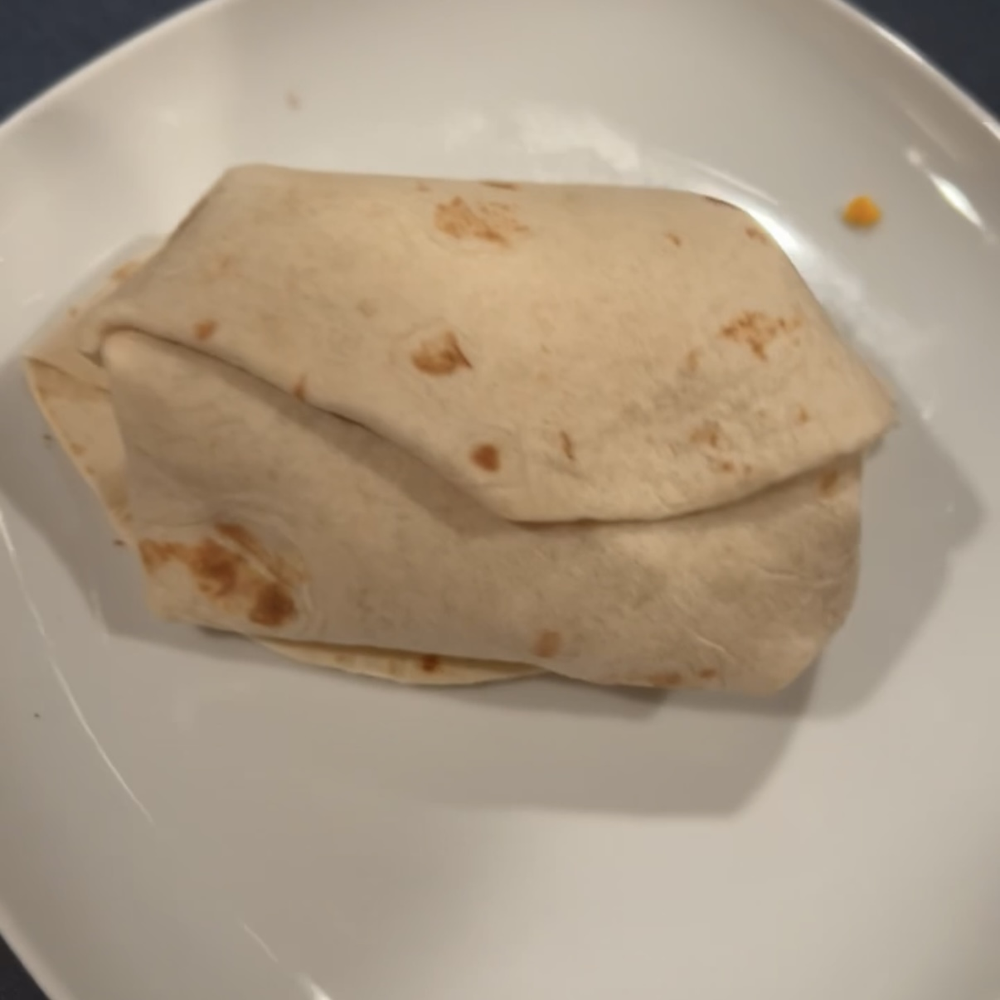

The Burrito
Ingredients:
- Tortillas
- Chicken
- Mexican Blend Shredded Cheese
- Sour Cream
- Guacamole
- Salsa
- Rice
Spices:
- Black Beans
- Chili Powder
- Cumin
- Garlic Powder
- Paprika
- Oregano
- Salt
- Sugar
This is a simple recipe, it's mostly just assembly. To start grab your chicken and cut it up into bite-sized cubes and throw into a pan on the stove. Grab a bag and add your preferred ratio of each, feel free to experiment. Mix up all of the spices and take a couple of spoonfuls and spread it onto the chicken, and start cooking it. After a little bit, make sure you flip or move around the chicken so that one side doesn't get too disproportionally cooked.
As the chicken is cooking, start cooking the beans and rice. These take less effort to cook, but still require some stirring to ensure that they don't burn to the pots. Cook all three until they are all ready, if one is ready first, bring the heat to a low simmer to keep it from getting cold.
Once all of the heated parts are ready, get out a plate with some tortillas. Take scoops of each of the ingredients and place on the tortillas. Try to figure out a way to fold the tortillas around the filling, making an ovular shape. Try to hold onto the whole burrito and enjoy!